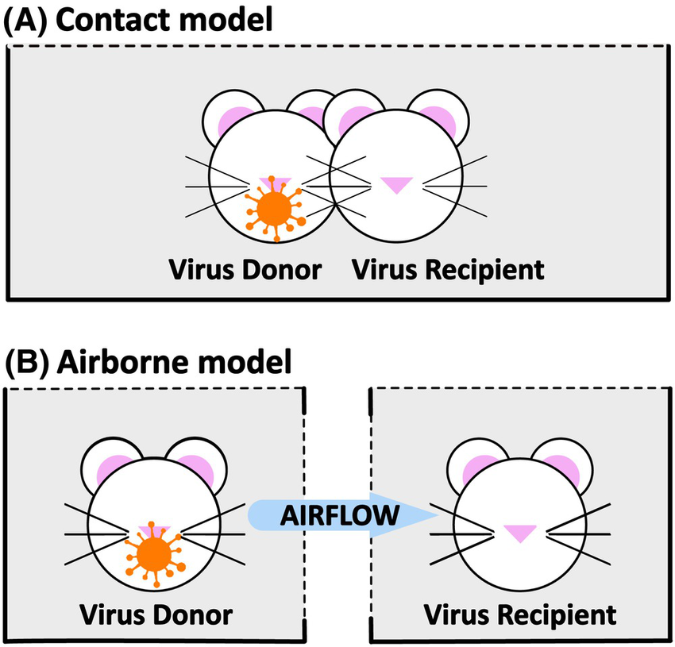
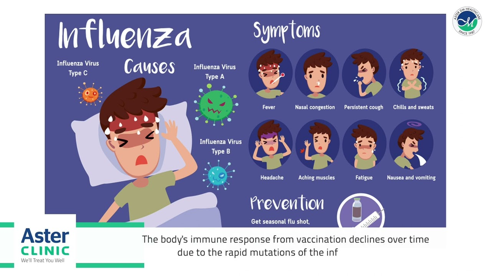

Year Originated
1936-1940
Location of Origin
Michigan, USA
Spread of Virus/Disease
Local Pandemic
Precautions required
Wear masks, apply Vaccine as annual flu shot , stay contact with doctor, avoid mammal animals

1936-1940
Michigan, USA
Local Pandemic
Wear masks, apply Vaccine as annual flu shot , stay contact with doctor, avoid mammal animals

Influenza B virus is only known to infect certain mammal species, including humans, ferrets, pigs and seals. This limited host range is apparently responsible for the lack of associated influenza pandemics in contrast with those caused by the morphologically similar influenza A virus as both mutate by both antigenic drift and reassortment. Nevertheless, it is accepted that Influenza B virus could cause significant morbidity and mortality worldwide, and significantly impacts adolescents and schoolchildren.
There are two known circulating lineages of Influenza B virus based on the antigenic properties of the surface glycoprotein hemagglutinin. The lineages are termed B/Yamagata/16/88-like and B/Victoria/2/87-like viruses. The quadrivalent influenza vaccine licensed by the CDC has been designed to protect against both co-circulating lineages and as of 2016 has been shown to have greater effectiveness in prevention of influenza caused by Influenza B virus than the previous trivalent vaccine
People with B strain of influenza have reported a wide range of symptoms ranging from mild to severe. Symptoms may appear approximately 3-15 days after exposure to the virus. Anyone can have mild to severe symptoms. Possible symptoms include:
This list does not include all possible symptoms. Symptoms may change with new Influenza variants and can vary by person. The CDC will continue to update this list as we learn more about Influenza.

The stats below show the danger and consequences of Influenza B
 Up to 800,000 per outbreak
Active Cases
Up to 800,000 per outbreak
Active Cases
 861 per outbreak
Deaths
861 per outbreak
Deaths
 up to 480000
Recovered Cases
up to 480000
Recovered Cases
The substantial economic impact of influenza on society results primarily from lost work time and reduced productivity of patients and caregivers and increased use of medical resources. Additionally, since the 1980s, aging of the US population has meant rising influenza-related morbidity and mortality. According to the most current published data on this topic, in 2003 the total economic burden of influenza epidemics in the USA across all age groups was US$87.1 billion. As of February 2013, overall vaccine effectiveness for the 2012/2013 season was estimated to be 56 %. The Centers for Disease Control and Prevention’s National Center for Immunization and Respiratory Diseases has concluded that more effective vaccines and vaccination strategies are needed. Moderate efficacy of the influenza vaccine, continued questions regarding the value of treatment with antivirals, and a growing self-care movement have led to increased use of over-the-counter (OTC) medicines, which play a vital role in managing symptoms associated with mild to moderate influenza and provide an estimated US$102 billion in annual savings for the US healthcare system. A primary benefit to society of using OTC medicines to manage influenza is decreased use of the healthcare system, thereby mitigating the socioeconomic burden of influenza. Considering the stresses placed on the US healthcare system and the substantial productivity losses resulting from seasonal influenza as well as the growing self-care movement, OTC medicines will play an important role in the course of future influenza epidemics.
Usually, you'll need nothing more than rest and plenty of fluids to treat the flu. But if you have a severe infection or are at higher risk of complications, your healthcare professional may prescribe an antiviral medicine to treat the flu. These medicines can include oseltamivir (Tamiflu), baloxavir (Xofluza) and zanamivir (Relenza). Oseltamivir and baloxavir are taken by mouth. Zanamivir is inhaled using a device similar to an asthma inhaler. Zanamivir shouldn't be used by anyone with certain chronic respiratory problems, such as asthma and lung disease. People who are in the hospital may be prescribed peramivir (Rapivab), which is given in a vein. These medicines may shorten your illness by a day or so and help prevent serious complications. Antiviral medicine side effects may include nausea and vomiting. These side effects may be lessened if the medicine is taken with food.
Your seasonal flu shot is also recommended by WHO, contact your closest medical facilities for informations and guidances
Discover other virus and how they devastated the society read more to explore further.
© VERTEX SYSTEM. Develop by TranVietBach. All Rights Reserved.